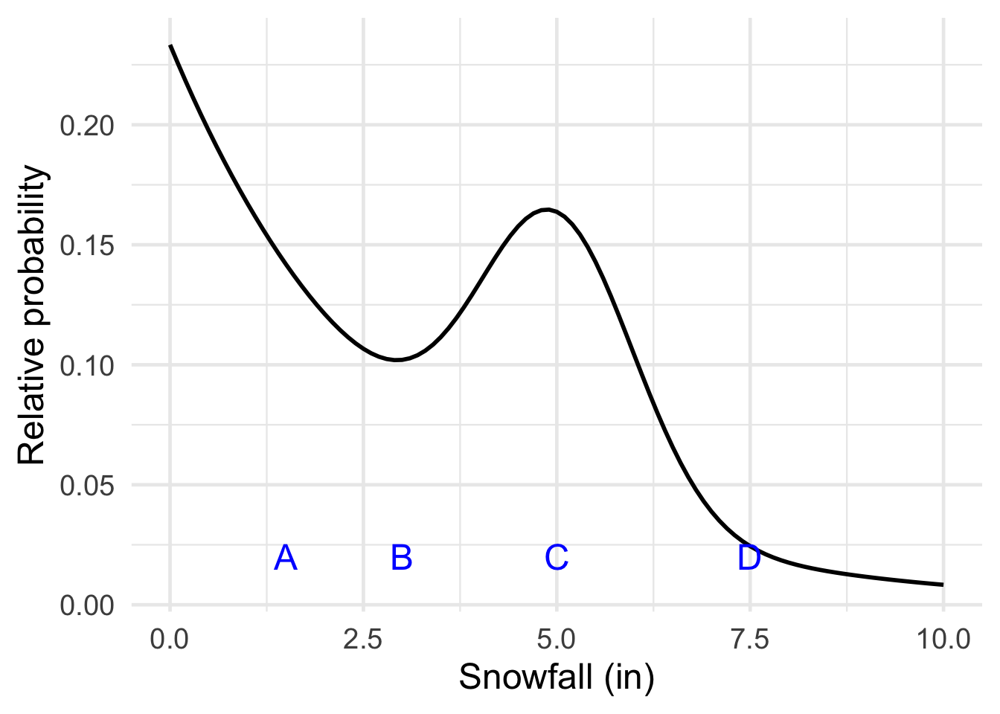
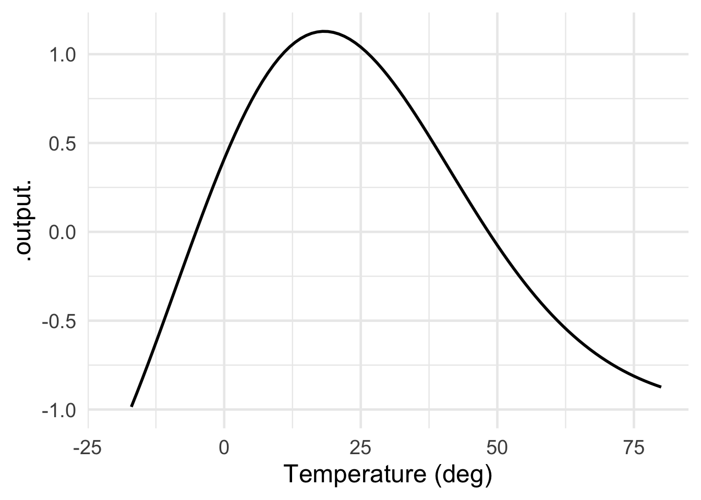
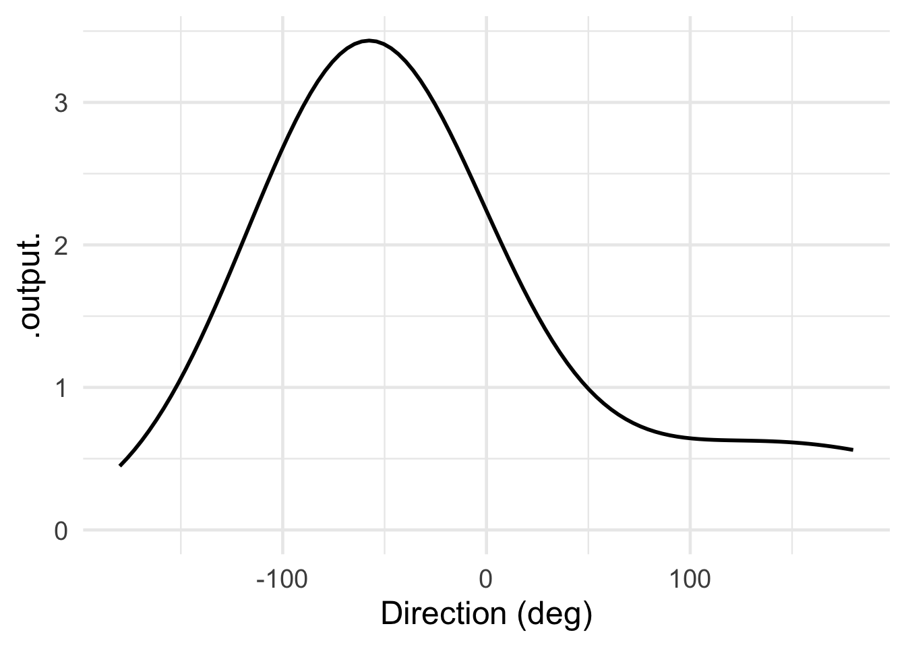
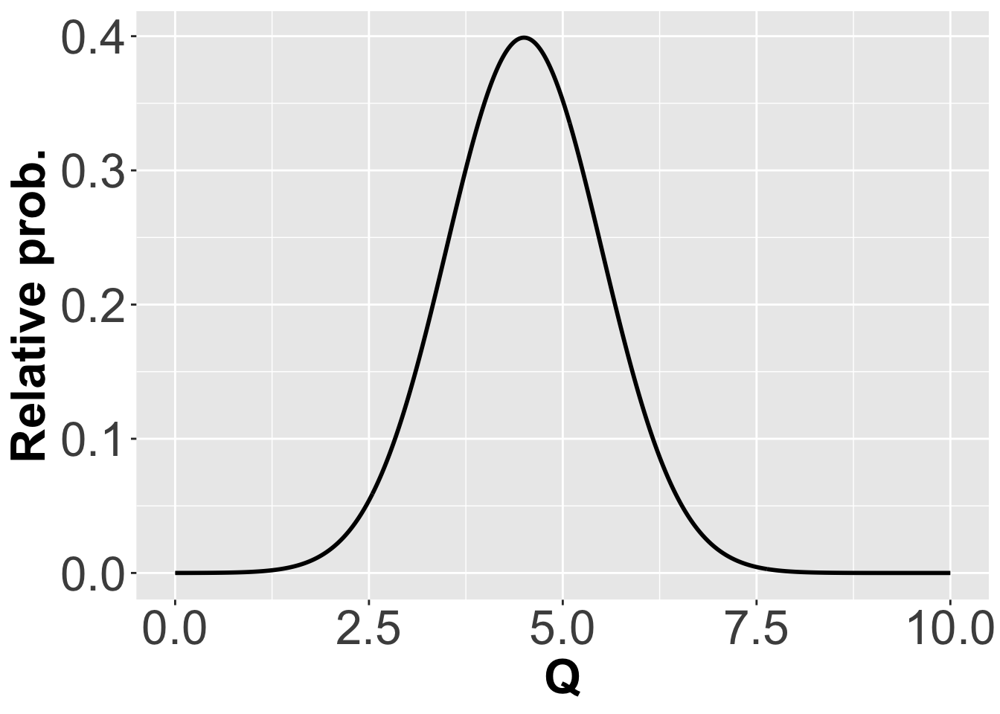
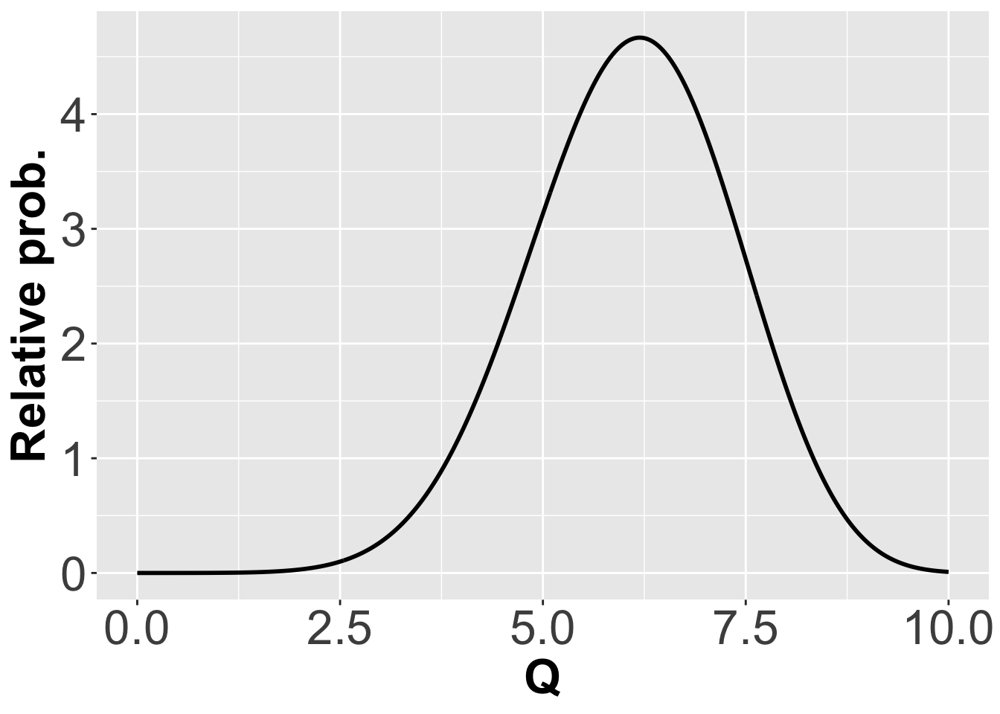
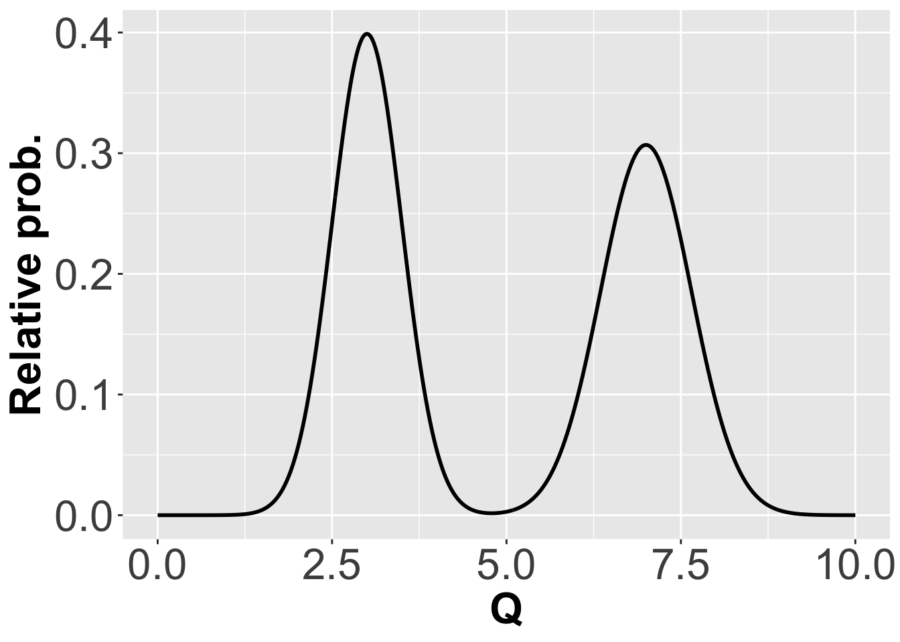
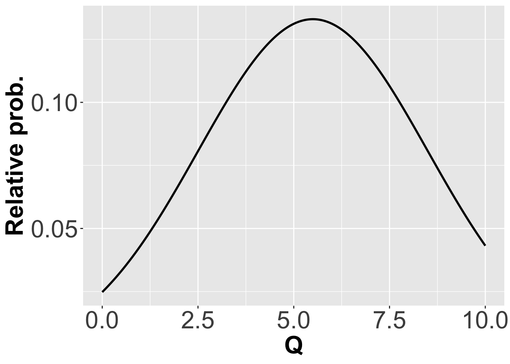
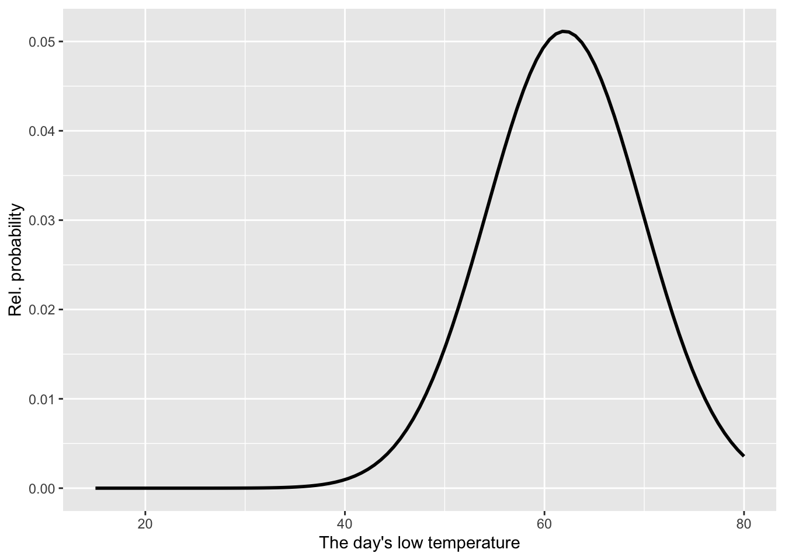
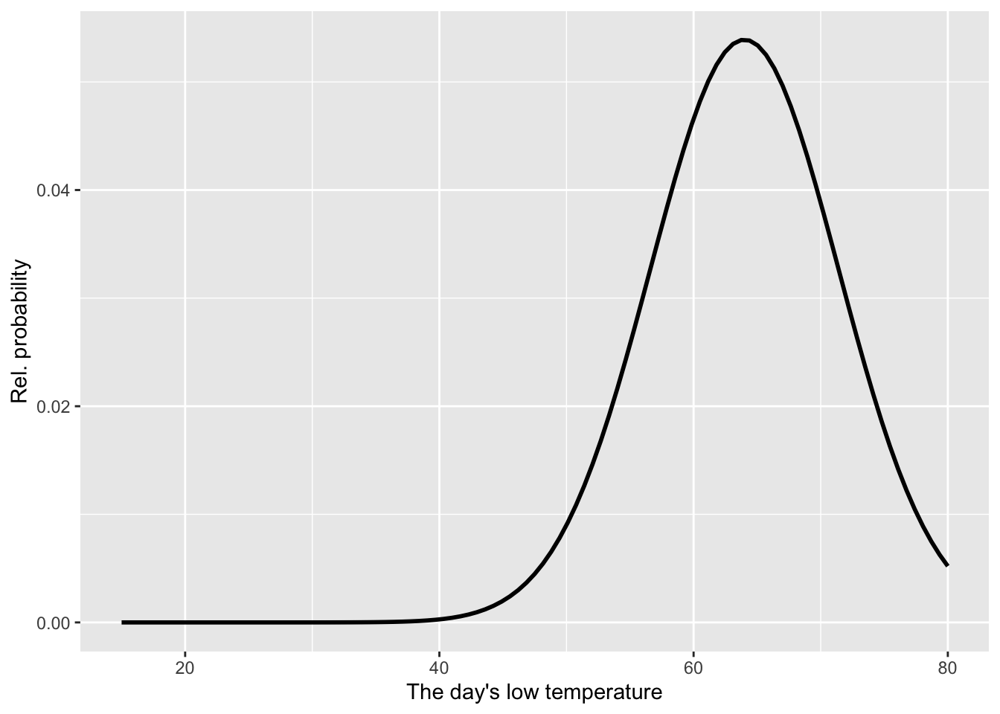
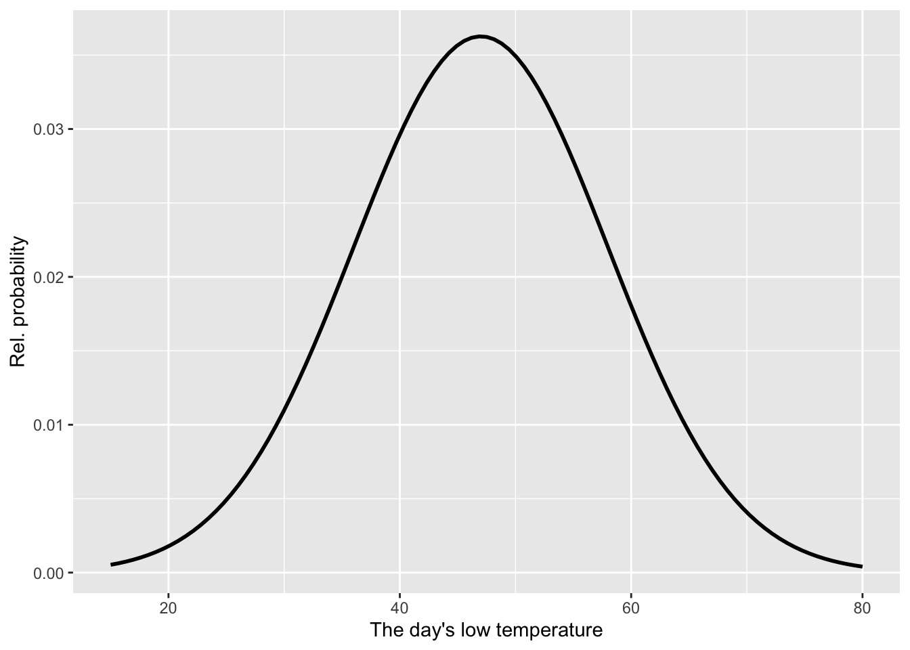

Quantitative Argumentation
Chapter 8 Drill Questions
NoteA. Relative probability
Exercise 1 Consider the relative probability distribution graphed below.
Which of these outcomes is the least likely?
Which of these outcomes is the most likely?
How much more likely is outcome C compared to outcome B? (Pick the closest estimate.)
- How much more likely is outcome B compared to outcome D? (Pick the closest estimate.)
Exercise 2 Each of the following graphics, except one, can be interpretted as a relative probability function. Which is the exception?




Exercise 3 An (absolute) probability is also a relative probability.
Exercise 4 Large Language Models generate responses in steps. In each step, one new token is added to the part of the response that has already been formed. To illustrate, here are the tokens that one AI considers to be likely to follow, “When I was walking …”.
| token | weight | lyrics |
|---|---|---|
| in | 2.8 | 2.1 |
| around | 1.4 | -0.1 |
| to | 3.1 | 0.6 |
| through | 0.7 | 1.0 |
| down | -1.2 | 1.8 |
| home | 1.9 | 2.0 |
| back | -0.3 | -1.1 |
| I | 1.7 | 0.8 |
| by | -1.1 | 1.6 |
| along | -2.6 | 1.4 |
Each word is assigned a weight. There are typically around 50,000 words to choose from. The above shows just a handful of the more likely ones.
The prompt “What are the most likely AI tokens that might follow ‘When I was walking’” generated the weights in the middle column. But for the “lyrics” column, the prompt was preceeded by “Taking into account the lyrics of popular music, ….”
- The numbers in the “weight” and “lyrics” columns are not relative probabilities. Which of the following explanations is most salient for this conclusion?
Relative probabilities do not need to add up to 1.
Relative probabilities do not need to be non-negative.
A relative probability can never be zero.
In fact, the weights generated by the AI are not relative probabilities. They are ordinary numbers which might be large or small, positive or negative. In the context of indicating a relative probability, the AI weights are called “logits.” Converting a logit to a relative probability is simple: use the core modeling function exp2(). The following chunk reads the weights and words into an R data frame, then does the conversion to relative and absolute probabilities.
- Which three words are much more likely to occur following “When I was walking” in the context of lyrics compared to general text?
NoteB. Named distributions
Exercise 5 Which of these pictures corresponds best to the idea that the quantity Q is \(5 \pm 2\)?




Exercise 6 Figure 3 shows the seasonal pattern in daily high and low temperatures for Austin, Texas, USA. Scanning the graph from left to right, you can see a yearly osc() pattern. Naturally, the high and low temperature on any given day vary from year to year so that, for each day, there is an uncertainty distribution.

Here are graphs of the low-temperature distributions for three days. Days were chosen at the lines dividing two consecutive months, e.g. March/April.



Match each graph to one of these days:
Graphic (a):
Graphic (b):
Graphic (c):
Exercise 7 Match the following real-world scenarios to the distribution that best models them (Uniform, Normal, or Exponential).
A. “I will arrive sometime between 1:00 PM and 5:00 PM, but any time in that window is equally likely.”
B. “The bus usually arrives at 8:00 AM, but it can be a few minutes early or late. It is very unlikely to be more than 15 minutes off.”
C. The amount of time that passes between two random, independent events (like 100-year storms or, on a different time scale, receiving text messages).
D. A quantity where values outside a specific range are considered impossible (probability = 0).
Exercise 8 Which core modeling function introduced in previous chapters is mathematically equivalent to the normal (a.k.a. Gaussian) distribution?
NoteKey vocabulary
Two of the following are valid descriptions of bayesian. The other three are not. Mark both of the VALID descriptions.
devoirs3::devoirs_selection(
label = "bayesian-8-two",
question = "Two of the following are valid descriptions of bayesian. The other three are not. Mark both of the VALID descriptions.",
answers = bayesian_8_two_choices,
multiple = TRUE
)()Two of the following are valid descriptions of exponential distribution. The other three are not. Mark both of the VALID descriptions.
devoirs3::devoirs_selection(
label = "exponential-distribution-8-two",
question = "Two of the following are valid descriptions of exponential distribution. The other three are not. Mark both of the VALID descriptions.",
answers = exponential_distribution_8_two_choices,
multiple = TRUE
)()Two of the following are valid descriptions of frequentism. The other three are not. Mark both of the VALID descriptions.
devoirs3::devoirs_selection(
label = "frequentism-8-two",
question = "Two of the following are valid descriptions of frequentism. The other three are not. Mark both of the VALID descriptions.",
answers = frequentism_8_two_choices,
multiple = TRUE
)()Two of the following are valid descriptions of hypothesis. The other three are not. Mark both of the VALID descriptions.
devoirs3::devoirs_selection(
label = "hypothesis-8-two",
question = "Two of the following are valid descriptions of hypothesis. The other three are not. Mark both of the VALID descriptions.",
answers = hypothesis_8_two_choices,
multiple = TRUE
)()Two of the following are valid descriptions of mean. The other three are not. Mark both of the VALID descriptions.
devoirs3::devoirs_selection(
label = "mean-8-two",
question = "Two of the following are valid descriptions of mean. The other three are not. Mark both of the VALID descriptions.",
answers = mean_8_two_choices,
multiple = TRUE
)()Two of the following are valid descriptions of normal distribution. The other three are not. Mark both of the VALID descriptions.
devoirs3::devoirs_selection(
label = "normal-distribution-8-two",
question = "Two of the following are valid descriptions of normal distribution. The other three are not. Mark both of the VALID descriptions.",
answers = normal_distribution_8_two_choices,
multiple = TRUE
)()Two of the following are valid descriptions of probability distributions. The other three are not. Mark both of the VALID descriptions.
devoirs3::devoirs_selection(
label = "probability-distributions-8-two",
question = "Two of the following are valid descriptions of probability distributions. The other three are not. Mark both of the VALID descriptions.",
answers = probability_distributions_8_two_choices,
multiple = TRUE
)()Two of the following are valid descriptions of random number generation. The other three are not. Mark both of the VALID descriptions.
devoirs3::devoirs_selection(
label = "random-number-generation-8-two",
question = "Two of the following are valid descriptions of random number generation. The other three are not. Mark both of the VALID descriptions.",
answers = random_number_generation_8_two_choices,
multiple = TRUE
)()Two of the following are valid descriptions of range. The other three are not. Mark both of the VALID descriptions.
devoirs3::devoirs_selection(
label = "range-8-two",
question = "Two of the following are valid descriptions of range. The other three are not. Mark both of the VALID descriptions.",
answers = range_8_two_choices,
multiple = TRUE
)()Two of the following are valid descriptions of relative probability. The other three are not. Mark both of the VALID descriptions.
devoirs3::devoirs_selection(
label = "relative-probability-8-two",
question = "Two of the following are valid descriptions of relative probability. The other three are not. Mark both of the VALID descriptions.",
answers = relative_probability_8_two_choices,
multiple = TRUE
)()Two of the following are valid descriptions of simulation. The other three are not. Mark both of the VALID descriptions.
devoirs3::devoirs_selection(
label = "simulation-8-two",
question = "Two of the following are valid descriptions of simulation. The other three are not. Mark both of the VALID descriptions.",
answers = simulation_8_two_choices,
multiple = TRUE
)()Two of the following are valid descriptions of standard deviation. The other three are not. Mark both of the VALID descriptions.
devoirs3::devoirs_selection(
label = "standard-deviation-8-two",
question = "Two of the following are valid descriptions of standard deviation. The other three are not. Mark both of the VALID descriptions.",
answers = standard_deviation_8_two_choices,
multiple = TRUE
)()Two of the following are valid descriptions of uncertainty. The other three are not. Mark both of the VALID descriptions.
devoirs3::devoirs_selection(
label = "uncertainty-8-two",
question = "Two of the following are valid descriptions of uncertainty. The other three are not. Mark both of the VALID descriptions.",
answers = uncertainty_8_two_choices,
multiple = TRUE
)()Two of the following are valid descriptions of uniform distribution. The other three are not. Mark both of the VALID descriptions.
devoirs3::devoirs_selection(
label = "uniform-distribution-8-two",
question = "Two of the following are valid descriptions of uniform distribution. The other three are not. Mark both of the VALID descriptions.",
answers = uniform_distribution_8_two_choices,
multiple = TRUE
)()Two of the following are valid descriptions of variance. The other three are not. Mark both of the VALID descriptions.
devoirs3::devoirs_selection(
label = "variance-8-two",
question = "Two of the following are valid descriptions of variance. The other three are not. Mark both of the VALID descriptions.",
answers = variance_8_two_choices,
multiple = TRUE
)()